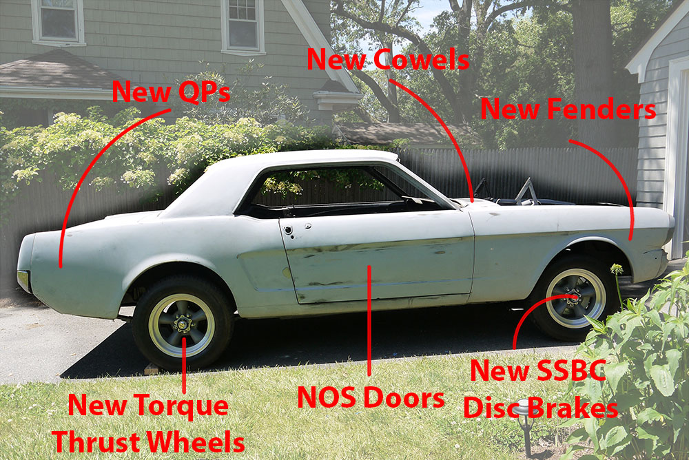
All bodywork is complete and ready for a final block and sand prior to paint. The entire care has been primed in PPG epoxy primer, for added rustproofing. Epoxy seam sealer has also been used throughout. Common problem areas (cowls, floorpan, etc.) have been coated in POR-15 prior to topcoat.
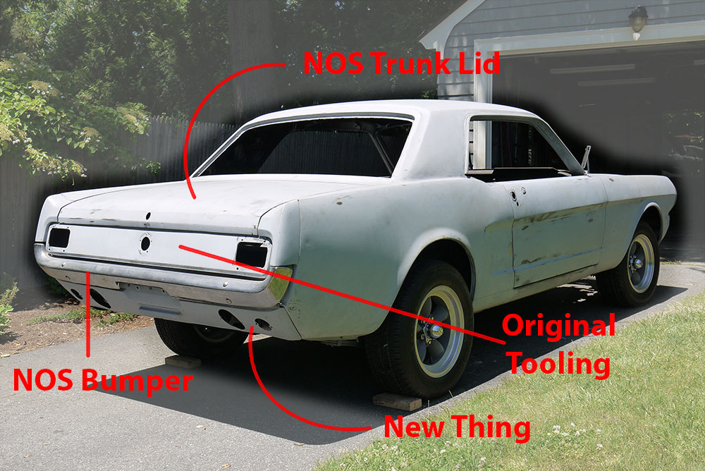
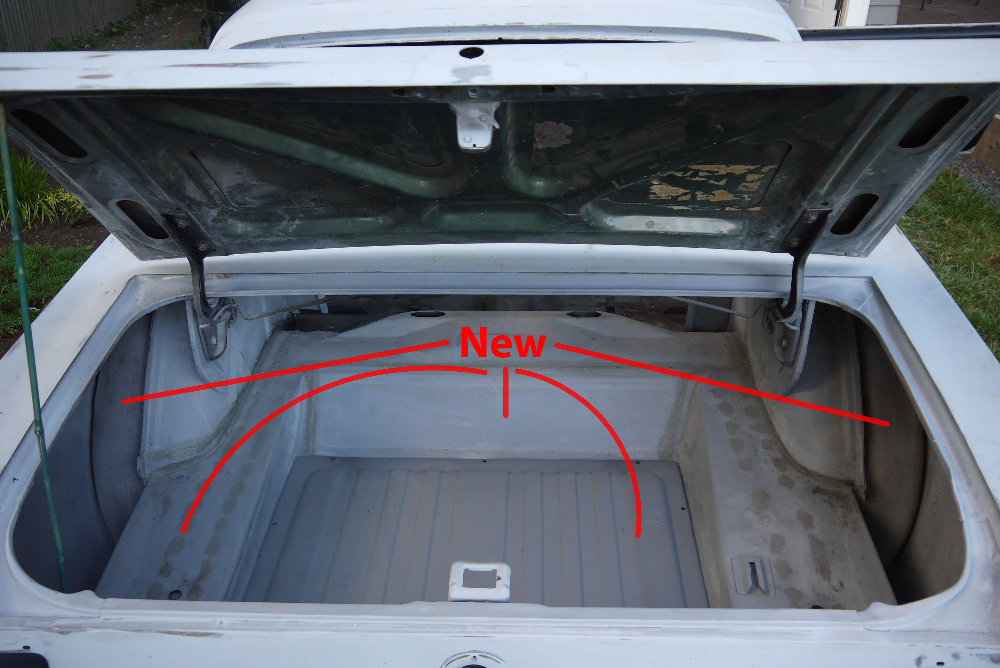
The trunk space includes new outer wheel wells, trunk floor, drop down pan, and gas tank. The trunk lid (picked up at Carlisle) still has remnants of the original instruction sticker!
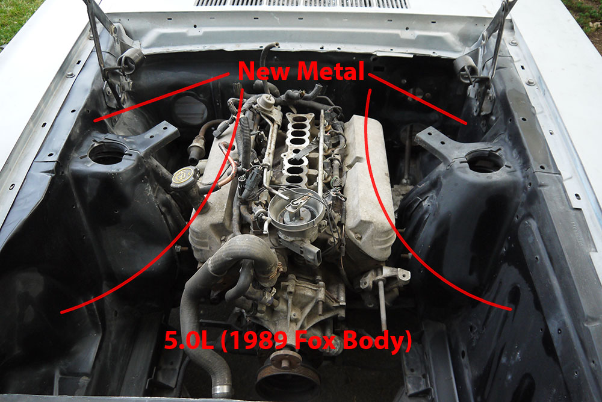
Engine includes all components for EFI hookup. Engine bay aprons all new metal. "Shelby drop" lowers front end and improves handling.
Body Shots


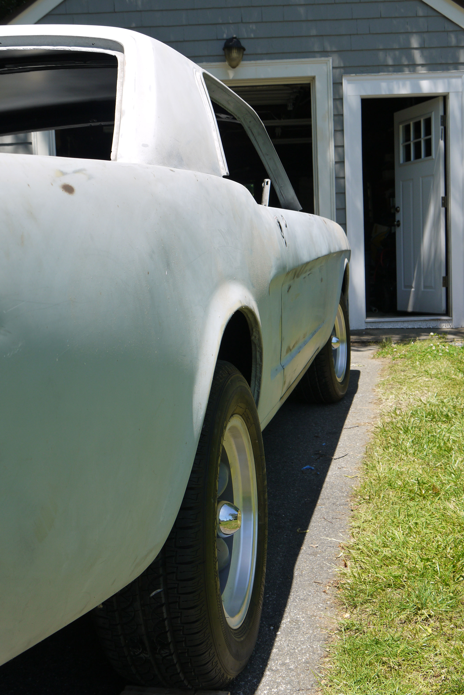
Suspension
Brand new front suspension includes reinforced upper and lower control arms, springs, all bushings. Front brakes upgraded to SSBC disc brakes. Rear includes new and upgraded leaf springs.

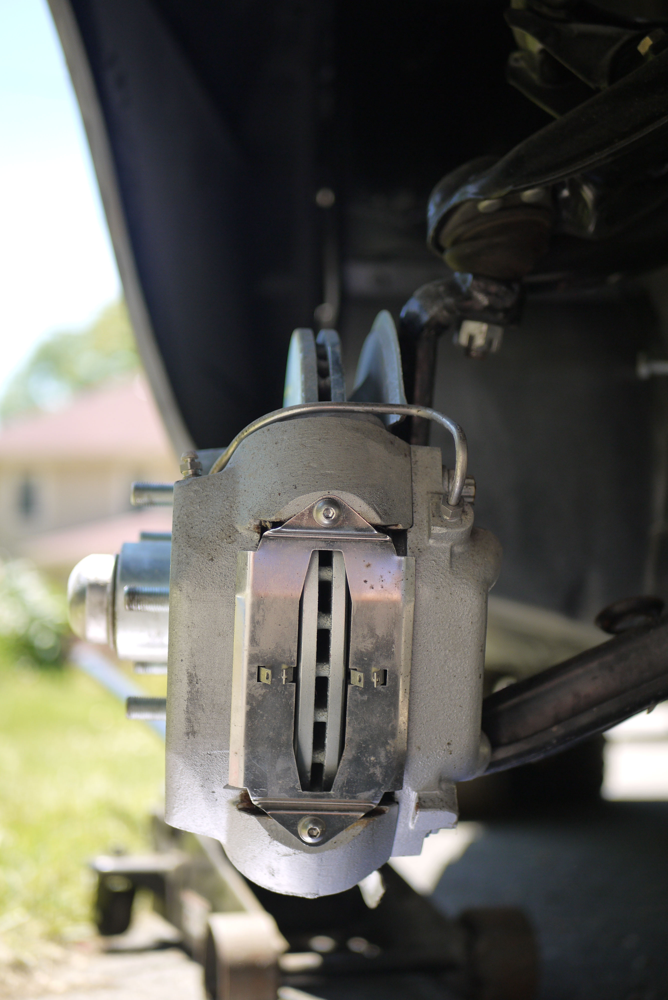
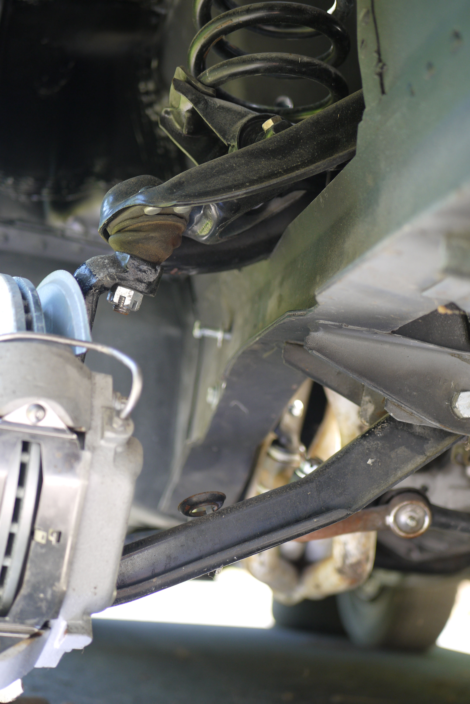
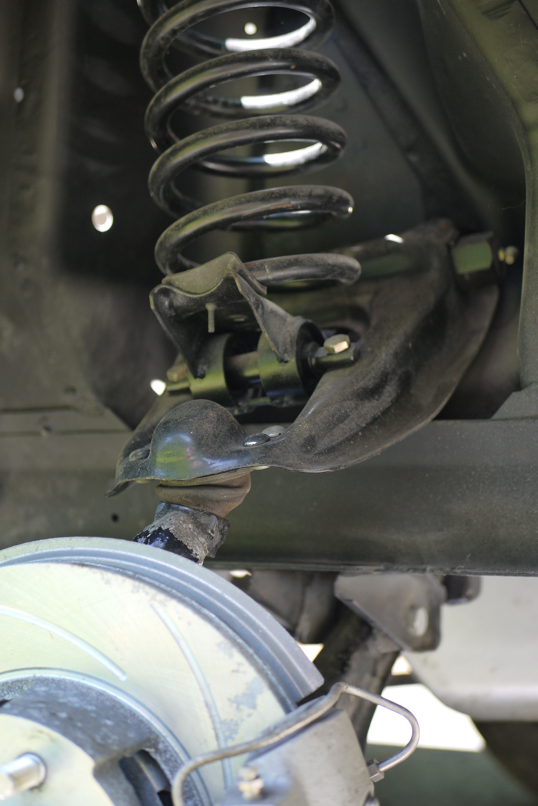

Shell Metalwork
Complete floorpan replacement. Underbody coated in POR-15, then topped with PPG epoxy primer and topcoated. Upgrades include front torque boxes and heavy duty subframe connectors.
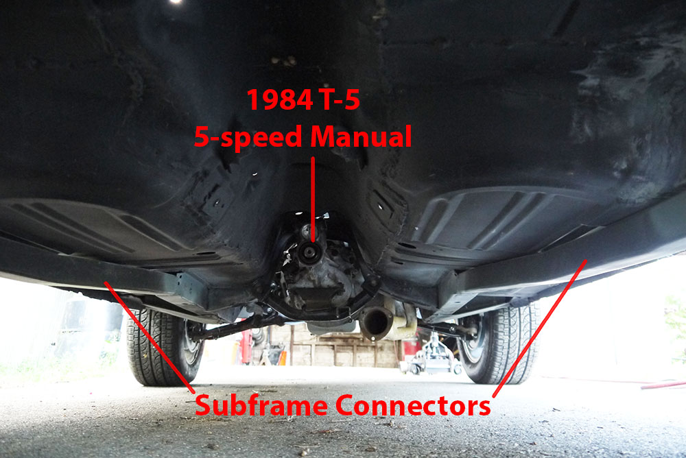

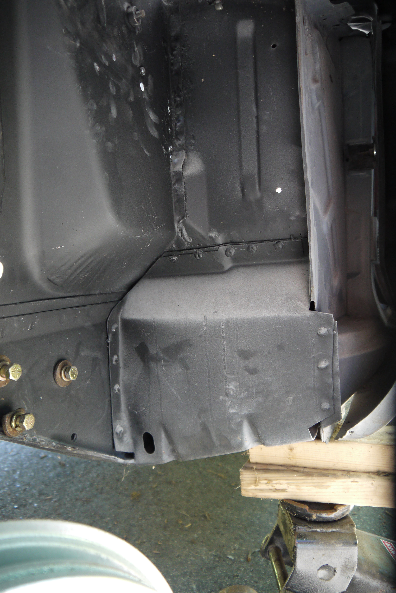
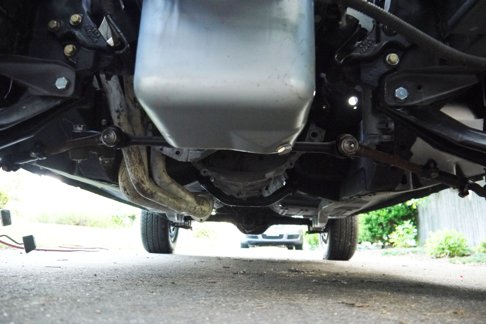
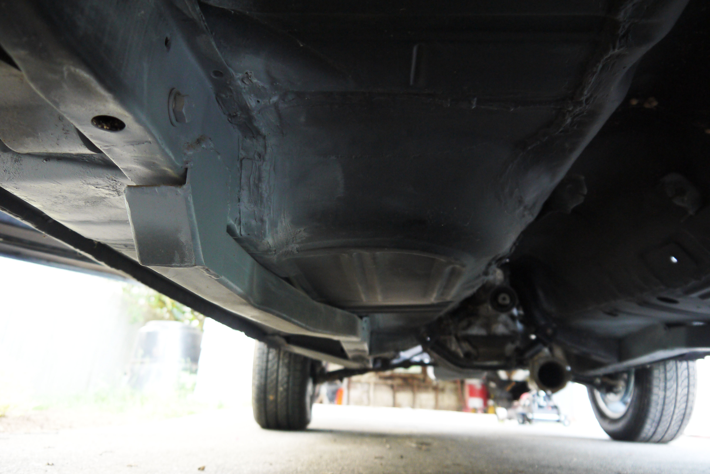
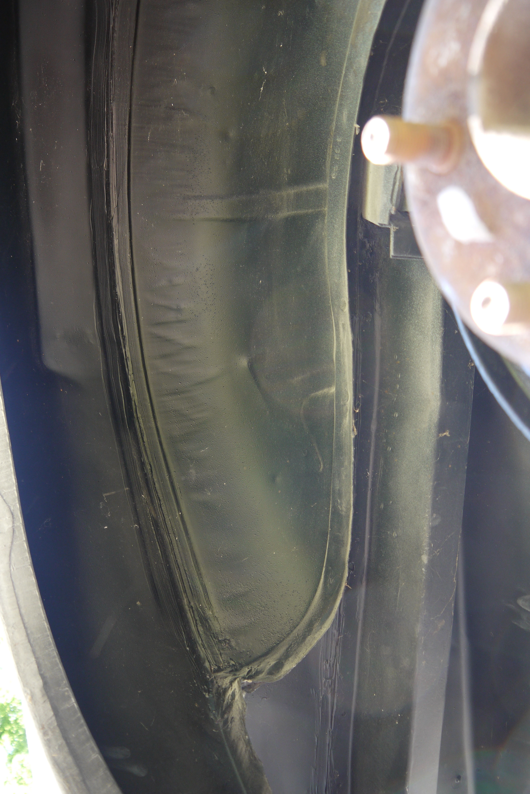
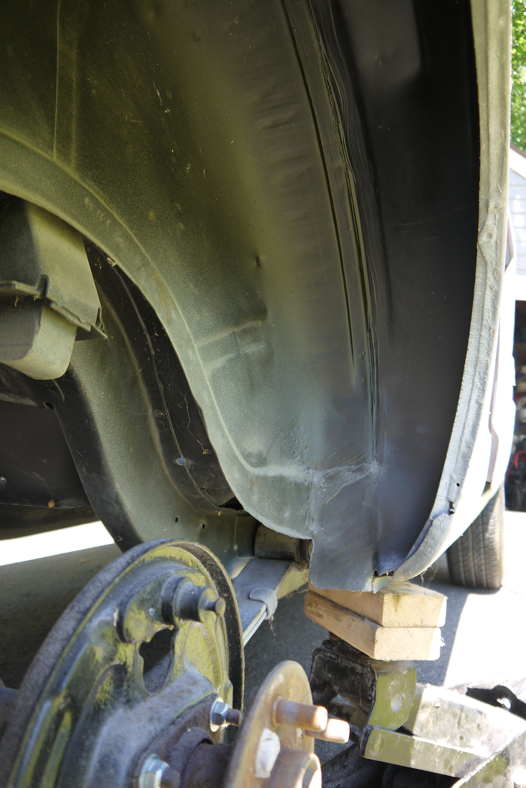

Parts
Tons of new/refurbed/original parts ready to go in. Too many parts to show here. New carpets, complete new AMK master fastener kit, NOS hood, lots of stuff...


Bye...